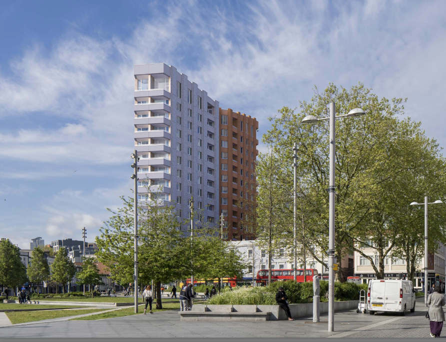
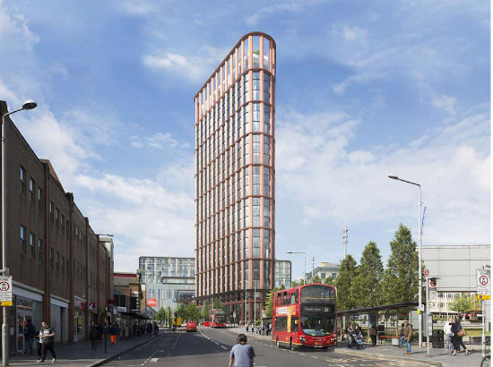

The two towers
This is the second application for Meyer Homes on this site, the previous scheme - which included a 27-storey tower in front of the existing Tesco store - was rejected by the Council’s Planning Board, and the developer took it to a national appeal in November 2019. But the Inquiry recommended rejection of the scheme and the Minister agreed with the Planning Inspector’s report.
This revised application presents a scheme where the ‘unacceptably dominating and overbearing’ 27-storey tower in Phase 3 has been reduced to a 15-storey block - shown below - which will obliterate the green space in front Tesco, and dominate General Gordon Square.

Above: The revised application with a 15-storey tower, and below; the previous application with 27 storeys.

Issues
Height
This block will still loom over the neighbouring buildings around this currently green space and General Gordon Square. It’s size and shape will still be out of proportion to those other buildings.
The site adjoins the Woolwich Conservation Area and any development should therefore preserve or enhance the character of the conservation zone. This proposal does neither. It will in fact conflict completely with the principles agreed by the Council in the Woolwich Conservation Area.
The seven blocks proposed for Phase 4 - to be built behind the existing Tesco Store - are also disproportionately high, ranging as they do from nine to 16 storeys. There is a clear inference that these blocks are not the most suitable architecturally that could be designed for the area, but rather the biggest lumps that could be crammed into the site.
Design
The blocks, whether at the front or the rear of Tescos, are uninspiring and will detract from, rather than add to, the feeling that Woolwich has a history to celebrate, especially in the Town Centre. Some of the buildings next to the site date back to Georgian times, and many others to the Victorian period, yet there is no acknowledgement of this in the design of this scheme.
There will clearly be overshadowing of General Gordon Square – as the proposed tower is to the south of the square. The overshadowing is acknowledged in the Sunlight and Daylight Report, although the CGIs are far from clear as to the exact impact. The overshadowing will be at its worst in the spring, winter and autumn months and will seriously detract from the amenity of this much-loved and well-used public space.
Also, where the sunlight and daylight figures are shown for individual properties around the site, the report constantly refers back to the 2007 scheme. What is important for local residents is not whether conditions will be better than 2007 but the effect this plan will have if built.
In basic terms, this proposal represents a severe over-development of the site. The developers are seeking to cram as many residents as they can into Phase 4. This site borders onto a major road and two other busy streets. In the previous application this was dealt with by not providing any balconies for the flats.
Because this did not meet planning requirements, some of the flats now have balconies, whence the residents can appreciate the pollution for themselves.
Loss of green space
Speak Out Woolwich’s view is that a building on this site is unnecessary, and that the green triangle in front of Tesco’s would be better used by being kept open and be landscaped for public use for such facilities as a public children’s play area, of which there is none Woolwich Town.
We understand why the green hillocks were originally placed outside Tesco’s (because the developers were expecting to steam ahead in that area) but in the years since the area has become one which is utilised by local people and has formed a link with General Gordon Square itself.
Damage to local buildings
The site adjoins the Woolwich Conservation Area (WCA)and any development should therefore preserve or enhance the character of the WCA. This proposal does neither. It will in fact conflict completely with the principles agreed by RBG in the Woolwich Conservation Area, as highlighted in the Draft Appraisal in September 2021
The seven blocks proposed for Phase 4 are also disproportionately high, ranging as they do from nine to sixteen storeys. There is a clear inference that these blocks are not the most suitable architecturally that could be designed for the area but rather the biggest lumps that could be crammed into the site. And designs of the blocks, whether at the front or the rear of Tesco’s, are uninspiring and will detract from, rather than add to, the feeling that Woolwich has a history to celebrate, especially in the Town Centre. Some of the buildings next to the site date back to Georgian times, and many others to Victorian times, yet there is no acknowledgement of this in the design of this scheme.
Tenure mix
Overall, some 23% of the properties in the application are said to be ‘affordable’. Again, this definition is open to wide interpretation. However, the key point is that both RBG’s policies and those of the Mayor for London require 35% to be affordable.
Even hitting this 35% figure would only go a small way to making a dent in the Borough’s need for homes for local people. Yet Meyer, like other developers, appear certain that they can present a scheme with the 23% figure and this will be acceptable to RBG.
Only 9% of the planned units will be family units – and all of those will be above ground level. This in a borough where there are in excess of 20,000 on the housing waiting list and over 40% of those in the top priority are families needing homes of 3 bedrooms or more.
The total ‘affordable’ housing in this scheme is 16% LAR and 7% shared ownership. We stated at the Public Inquiry that social rent levels will be unaffordable if service charges are added to the rent. Plus, the shared ownership flats are likely to require an average annual income in excess of £50,000. How do local young people get on the housing ladder at those figures?
10% of the units will be wheelchair units but again these are all above ground level. The existing Tesco housing has been plagued by problems with lifts, some of which were mentioned at the Public Inquiry. The needs of disabled people are again being nodded to (to meet the required quota) but not seriously taken on board.
Even if one accepts the definition of affordability, only 16% of the homes are deemed to be affordable. This means that 84% of the homes are not affordable for local people. This is not a development for Woolwich but for people from outside to buy. Looking at other recent schemes ‘buy to leave’ (investments) has still not gone away. Indeed, Woolwich is already full of studio, 1-bed and 2-bed flats, many of which are unoccupied.
Conclusion
This scheme should be rejected by the Council’s planning board. This latest application ignores much of our criticisms which were highlighted in the 2019 Public Inquiry.